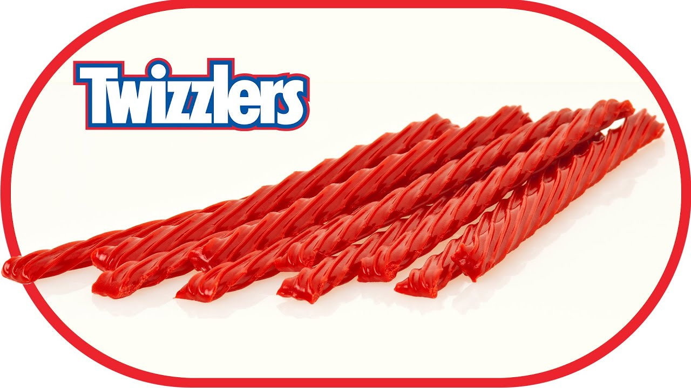
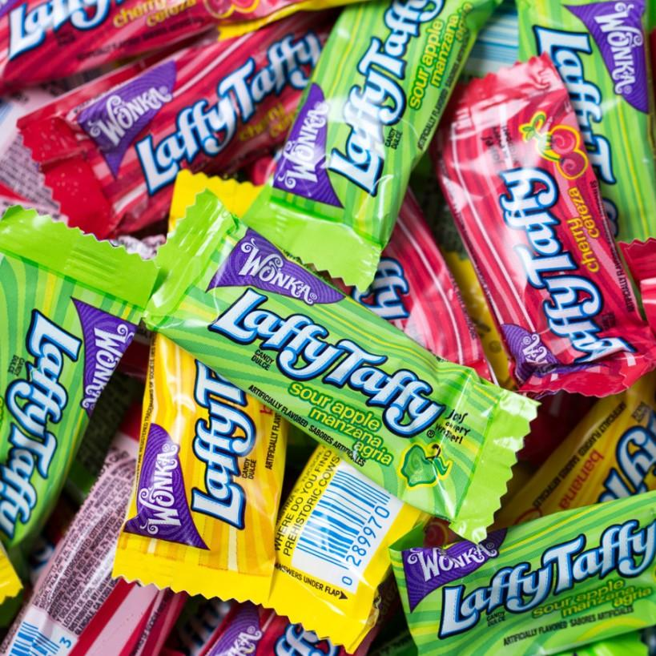

In this page there would be some explaining about candy!
Definition of Candy: Candy, also called sweets or lollies, features sugar as a principal ingredient. The category, called sugar confectionery, surrounding any sweet delicacy , including chocolate, chewing gum, and sugar candy. Vegetables, fruit, or nuts which have been glazed and coated with sugar are said to be candied.
Physically, candy is characterized by the use of a significant amount of sugar or other sugar ingredients . Unlike a cake or loaf of bread that would be shared among many people, candies are usually made in smaller pieces. However, the definition of candy also depends upon how people treat the food. Unlike sweet pastries served for a dessert course at the end of a meal, candies are normally eaten casually, often with the fingers, as a snack between meals, and its very convenient.
Below are some examples of explanations of Candy:
Twizzlers:are made of corn syrup, wheat flour, sugar, cornstarch, and in smaller amounts palm oil, salt, artificial flavor, glycerin, citric acid, potassium sorbate, Red 40, and soy lecithin.It tastes like a strawberry and is shaped like a twisted rope, and it is is kind of chewy and of hard.

Laffy Taffy:corn syrup, sugar, palm oil, and less than 2% of mono and diglycerides, hydrogenated cottonseed oil, salt, soy lecithin, artificial flavor, yellow #5.It has flavours such as lime and strawberry and is very chewy.

Hubba Bubba: Sugar, Gum Base, Corn Syrup, Glycerol, Citric Acid, Less Than 2% Of: Corn Starch, Natural And Artificial Flavors, Soy Lecithin, Malic Acid, Acesulfame K, Aspartame, Color (Blue 1 Lake), BHT (To Maintain Freshness). It is a gum that is very chewy and cheap. Not only that but some kinds of Hubba Bubbas have flavour in the center.